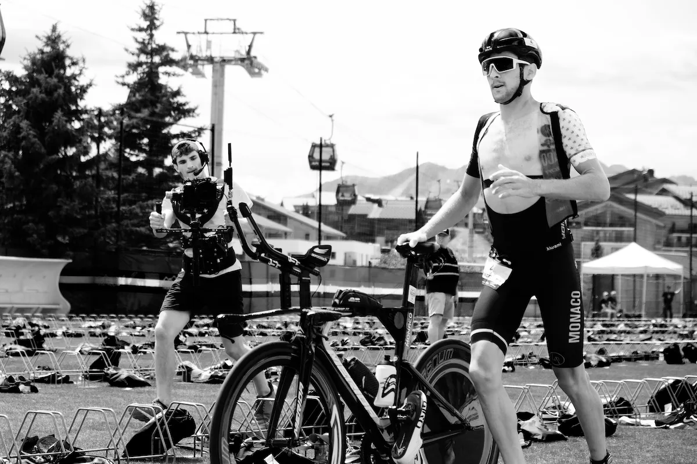

T1
-
Zmiana z pływania na rower w triathlonie, zwana również strefą przejściową (T1), stanowi kluczowy moment zawodów, gdzie triathloniści przechodzą z jednej dyscypliny do drugiej. Po intensywnym wysiłku pływackim, uczestnicy wychodzą z wody i kierują się do strefy przejściowej, gdzie znajduje się ich rower. W strefie przejściowej triathlonista musi błyskawicznie zdjąć piankę pływacką, założyć kask, buty i inne elementy wyposażenia rowerowego. Skoordynowanie tych czynności jest kluczowe, ponieważ każda chwila spędzona w strefie przejściowej ma wpływ na łączny czas zawodnika. Sprawne przygotowanie do jazdy na rowerze jest istotne, ponieważ to kolejny etap, który wymaga znacznej siły i kondycji.
- 